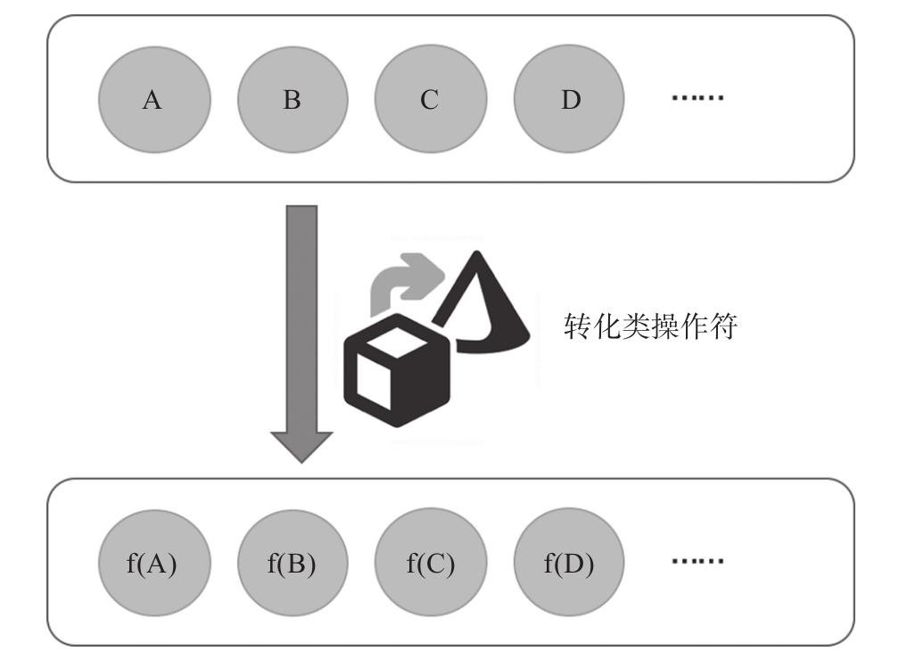

映射数据是最简单的转化形式，如图8-1所示。

图8-1 转化类操作符示意图
假如上游的数据是A、B、C、D的序列，那么可以认为经过转化类操作符之后，就会变成f（A）、f（B）、f（C）、f（D）的序列，其中f是一个函数，作用于上游数据之后，产生的就是传给下游新的数据。
这样的过程并不难理解，因为JavaScript的数组就提供这样的功能，在著名的JavaScript工具库lodash中也有类似的函数支持。这一类操作符只有三个map、mapTo和pluck而已。